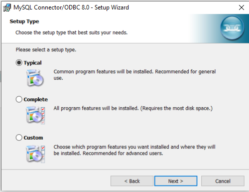
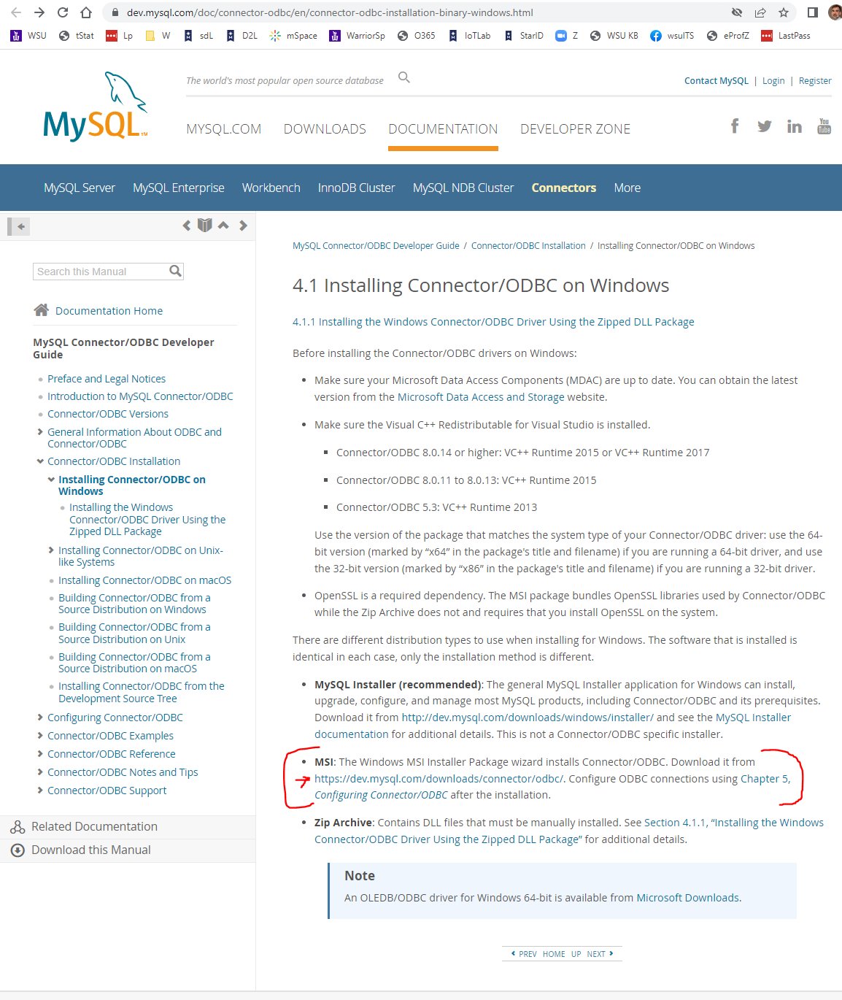
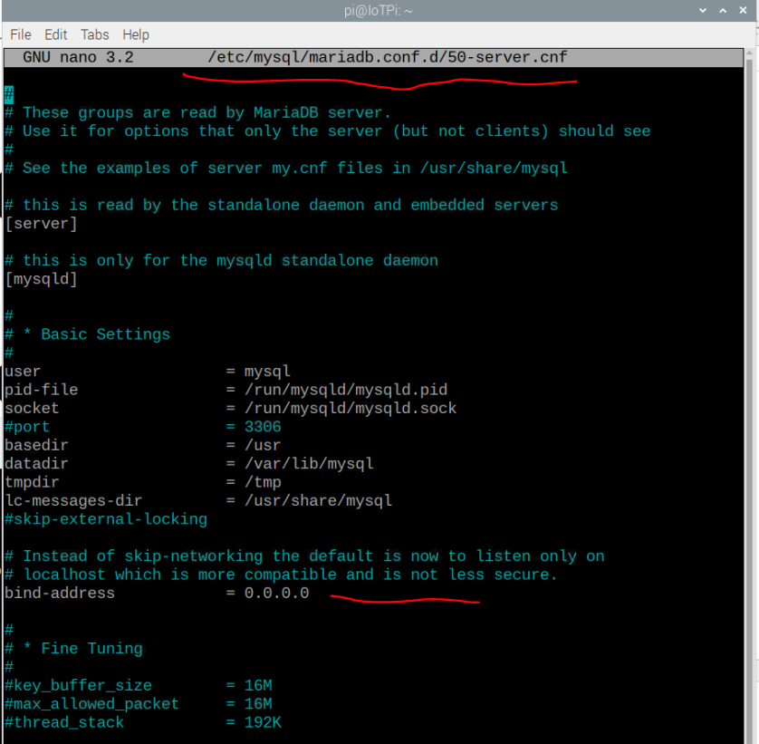

PgP 9/5/2022-This is background information for what needs to be done to use a network to connect a Microsoft Access application on Windows to a Raspberry Pi running MySQL/mariaDB, Apache, phpMyAdmin-using a 64-bit ODBC connector.
These instructions will show you how to use Microsoft Access to link to a MySQL/Maria database server onto a Raspberry Pi. This allows you to collect data from sensors and programs on a Raspberry Pi. More information on MySQL is available online. This software will allow you to monitor data collected from devices connected to your Raspberry Pi-such as peripherals and connected sensors.
After completing this assignment you will be able to:
You are expected to have a working knowledge of SBC hardware and software. If you do not understand how to use an item, perform a Google Search, refer to the WSU Technology Knowledge Base, ask a teaching assistant, or ask the instructor.
In this IoT assignment you connect Microsoft Access running on your laptop to a MySQL/MariaDB server running on a Raspberry Pi.
Internet of Things: Databases
MySQL/MariaDB is already installed and running on a Raspberry Pi, see IOT10.
The instructions below are for reference.
sudo apt install mariadb-server -y
sudo /etc/init.d/mysql status
sudo mysql -u root -p -h localhost
https://dev.mysql.com/doc/index-other.html
Source /home/pi/Documents/world.sql/world.sql
MariaDB [world]> show tables; +-----------------+ | Tables_in_world | +-----------------+ | city | | country | | countrylanguage | +-----------------+ 3 rows in set (0.001 sec)
SELECT COUNT(*) FROM city; SELECT * FROM country;
WSU laptops use 64 bit Windows with 64-bit Access, so need to install and use the 64-bit ODBC MySQL connector See MIS342 Project 2, Part 1 for details.
In this exercise learn to connect to the Raspberry Pi MySQL database from Microsoft Access on another computer.
https://dev.mysql.com/doc/connector-odbc/en/connector-odbc-installation-binary-windows.html
 Choose Typical Install
 ODBC Installer
MySQL Installer
phpmysql
sudo nano /etc/mysql/mariadb.conf.d/50-server.cnf
 mariaDb Config
sudo iptables -A INPUT -p tcp --dport 3306 -j ACCEPT
GRANT ALL PRIVILEGES ON world.* TO root@'192.168.1.21' IDENTIFIED BY '';
GRANT ALL PRIVILEGES ON *.* TO 'pi'@'localhost' IDENTIFIED BY 'phpmysql' WITH GRANT OPTION;
Successful ODBC Connection
This works both ways-can update records in MySQL on RPi, and also update records in Access and see results. Make screen shots of the MySql installation and upload to the D2L Project04 Assignment folder.
Make sure MySQL is still running.
scrot
Submit to the appropriate D2L Assignment folder a screenshot that documents your work.
(50) 1. Upload your screenshot to the 'IOT20' D2L Assignment Folder.
Based on your experience in this exercise, consider the value of mySQL databases for organizations, especially those needing to curate information. Think about what type of problems a Raspberry Pi equipped with a relational database could solve, and whether it could be cost-effective. Businesses are deploying IoT 'solutions'-how can mySQL equipped Raspberry Pis support or automate these efforts? References: MySQL on Pi: Pi MyLifeUp website W3 Schools: MySQL Tutorial
When all tasks are completed press the Submit button.
Congratulations! You have used MySQL/mariadB, a relational database application, on a Raspberry Pi single board computer.